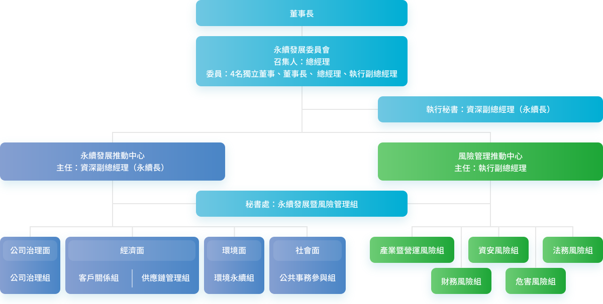
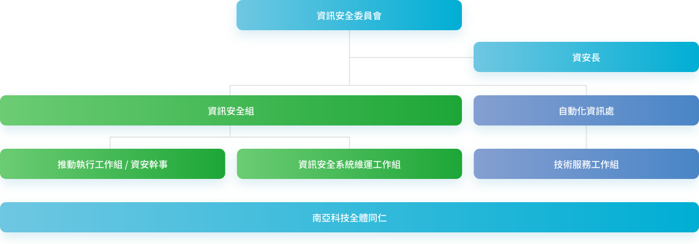
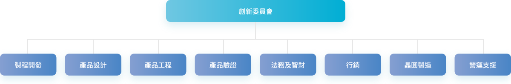
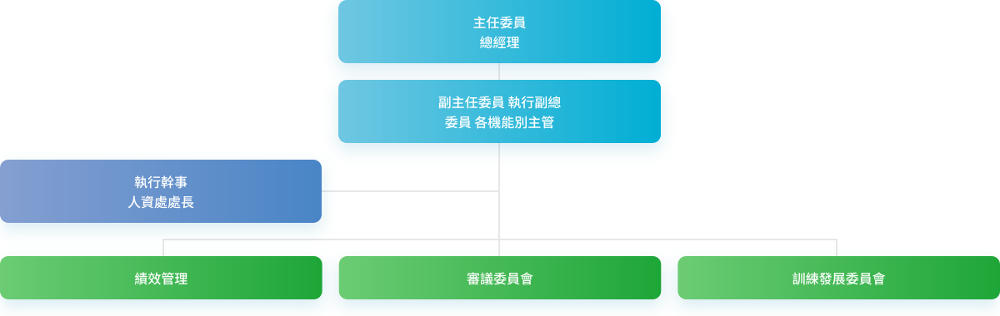
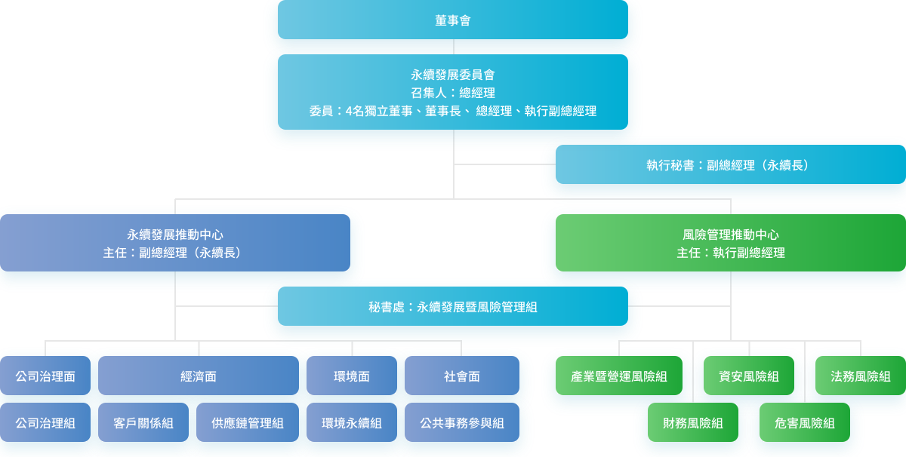

永續架構

永續治理與組織
南亞科技於2022年8月正式將永續發展委員會提升為董事會轄下之功能性委員會，該委員會由董事長、4位獨立董事及2位執行董事共同組成，委員會成員共同推派總經理為召集人，並由永續長為報告人，委員會具備「永續發展」及「風險管理」相關推動工作之監督功能，成立至今，我們固定每年兩次於董事會中進行永續及風險專案報告，定期審視公司永續發展策略、願景、目標、執行方針及成果，以及風險管理例行追蹤情形，讓永續發展委員會成員與董事會成員充份了解公司在永續工作推展進程、新年度重大議題目標設定與上年度目標執行狀況、亮點事項、利害關係人議合等工作進行彙報，提升整體永續治理層級。
責成推動中心

同時，永續發展委員會責成永續發展推動中心與風險管理推動中心，進行各項永續工作與風險管理工作之推動，分別由執行副總經理及副總經理擔任主任，並由總經理室永續發展暨風險管理組擔任秘書處單位，持續妥善溝通永續發展對企業管理的重要性，負責每季定期召開「永續發展季會」與「風險管理季會」，規劃與管控各項行動方案與風險項目，整合與監督公司治理、經濟、社會及環境永續四大面向的執行進度與成效，確保組織橫向與縱向溝通的有效性，具體實踐永續發展。
永續發展委員會
永續長除了在永續發展委員會中專責向委員報告之外，更需維持與利害關係人在永續發展議題的良好互動，及確保各永續議題與專家的合作順暢，在企業內部致力於跨部門的橫向溝通，聚焦永續目標並推動執行方針。2024年未有因發生關鍵重大事件需與董事會溝通之情況。南亞科技風險管理推動及2024年運作情形請參閱「誠信透明」章節。
南亞科技永續發展委員會

-
 四大面向
四大面向
依據公司治理面、經濟面、社會面及環境面四大面向，分別由公司治理主管、財務主管、人資處處長、環境安全衛生處處長擔任總幹事。
-
 四次會議
四次會議
每季向總經理報告永續發展事務執行情形與成效，並擬訂工作重點專案與績效指標。
-
 五個工作小組
五個工作小組
設立五個工作小組，涵蓋公司治理、客戶關係、供應鏈管理、公共事務參與以及環境永續。
南亞科技各面向委員會
- 資訊安全委員會
- 創新委員會
- 人才發展委員會
- 永續發展委員會
-
資訊安全委員會

-
創新委員會

-
人才發展委員會

-
永續發展委員會

永續發展工作要點

-
2024年永續發展工作主要亮點
- 入選DJSI世界指數，S&P Global永續年鑑全球ESG分數前10%，並榮獲MSCI指數AA評級
- CDP氣候變遷與水安全兩大面向同步獲得領導級 (Leadership Level)評等
- TCSA百大典範企業與3項單項績效獎
- 天下永續公民大型企業組製造業第15名
- 商業週刊 碳·競爭力100強
- 環境部資源循環績優企業 資源循環組 銀質獎
- 導入TNFD揭露指引並整合TCFD架構，出版「氣候暨自然財務相關報告書」
- 永續供應鏈精進專案推動，包含產品碳足跡管理、大帶小低碳轉型專案等
- 因應環境部徵收碳費之政策，強化減碳小組功能、落實減碳行動方案
- 遵循金融監督管理委員會「我國接軌IFRS永續揭露準則藍圖」，擬定導入計畫，完成階段性執行項目及申報
如果您使用IE11 (含)以下版本瀏覽器，建議您升級成 Edge 瀏覽器，或使用其他瀏覽器軟體 Google Chrome、Firefox，並搭配 1024 x 768 以上之螢幕解析度，以獲得最佳瀏覽體驗。本網站使用 cookies 以提昇您的使用體驗及統計網路流量相關資料。繼續使用本網站表示您同意我們使用 cookies。
我們的 隱私及 Cookies 政策 提供更多關於 cookies 使用及停用的相關資訊。